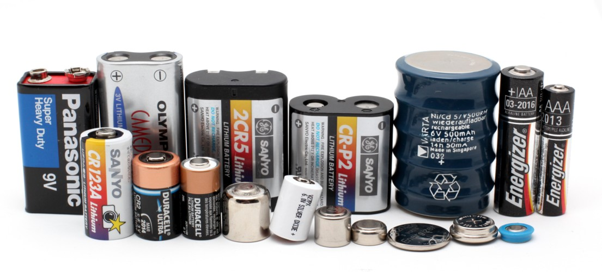

The 4 Worst Offenders
Batteries
Many things in our environment run off of batteries, and there are so many different forms of batteries. Cellphones, radios, clocks, laptops, watches, hearing aids, and cars all make use of batteries.
Batteries are one of the bigger problems because they are so plentiful and many objects that you wouldn’t expect contain batteries. Nearly 179,000 tons of batteries end up in landfills every year in the U.S. Many batteries contain dangerous chemicals and acids like:
- Mercuric oxide
- Silver oxide
- Cadmium
- Lead-acid
There are several ways to decrease battery e-waste. Some battery companies offer programs in which they’ll accept used batteries. You can also recycle used batteries at a local recycling center, as long as they accept them. One of the best ways to cut down on battery e-waste is the purchase and use of rechargeable batteries. Not only does this eliminate the need to throw out used batteries, but it saves you from spending your money on new ones.

Cell Phones
Most people nowadays have cellphones. Because of the rapid changes in smart phone technology and planned obsolence, most Americans buy a new cell phone every year or two. Cell phones are a lot easier to recycle and should never be thrown out. Cellphones, just like a lot of other e-waste, contain heavy metals and chemicals.
A cell phone battery is usually a lithium or nickel battery and these are some of the more environmentally dangerous batteries. A lot of organizations accept old cell phones as donations for reuse and there are plenty of places to sell your old or broken smartphones. Even with these outlets, a surprising number of old cell phones end up in landfills. More than 140 million cell phones end up in landfills each year. When recycled, many materials from a cell phone can be reused. With every 1 million cell phones recycled, we can recover:
- 35,274 lbs of copper
- 772 lbs of silver
- 75 lbs of gold
- 33 lbs of palladium
Televisions
The proper disposal of old televisions can prove to be quite an issue. A lot of people don’t think to recycle them and they end up in landfills. Newer T.V.s like flat screens have many parts that can be reused in the production of new televisions. Many times, a T.V. that no longer works may just have one or two parts that went bad. This means that the rest of the television can be taken apart and reused, cutting down on what end up in landfills.
Older televisions, like CRTs (cathode ray tubes), contain massive amounts of lead and phosphors in the screen to improve viewing. This makes it crucial that they are recycled properly, or lead poisoning is a real factor. There are many companies that recycle these kinds of televisions for a small fee.
Computers
Personal computers and laptops, much like cell phones, can become obsolete within a few years. Companies are constantly improving on them and as a result, an older computer can start to feel slow and junky in comparison to what is currently on the market. Both computer monitors and CPUs have great potential for recycling. They have so many parts that can be reused and contain so many different precious metals. When it comes to old computer monitors, we have some of the same problems as we do with old televisions. These monitors used to be made with CRT displays, and need to be properly disposed of.